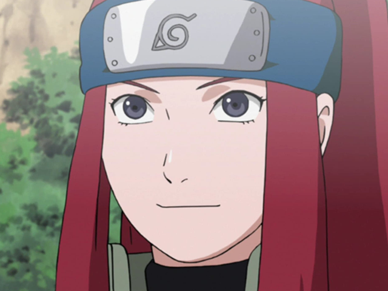
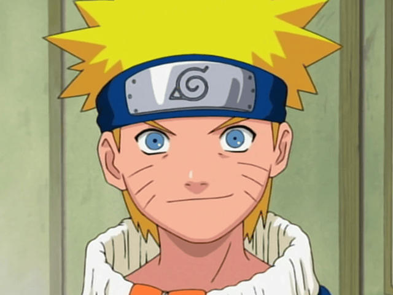

Minato Namikaze is the 4th Hokage of the Hidden Leaf Village. His nickname is the "Yellow Flash of the Leaf" because of his jutsu called the Flying Raijin Technique, an ability in which he can teleport instantly to any location he marked. He died protecting his son, Naruto, and the Hidden Leaf village.
Kushina Uzumaki

Red Hot-Blooded Habanero
Kushina Uzumaki is the wife of Minato. She is from the Uzumaki Clan, a clan known for their massive chakra reserves and sealing jutsus. Kushina is the former jinchuriki of the nine-tailed fox. Her nickname is the "The Red Hot-Blooded Habanero" for her fiery attitude. She died protecting her son, Naruto.
Naruto Uzumaki

Hero of Leaf Village
Naruto Uzumaki is the son of Minato and Kushina. He is the current jinchuriki of the nine-tailed fox. He is known for his jutsus such as the Multi-Shadow Clone Jutsu and Rasengan. Later in life, he became the 7th Hokage of the Hidden Leaf village.